Project 3
Contents
Introduction
The goal of project 3 is to use the sensors and actuators from project 1, the real time operating system (RTOS) from project 2, and an iRobot Roomba to create a semi-autonomous laser tank capable of battling other tanks. The Roomba will be controllable through a joystick and a pushbutton for the laser. It can roam and avoid obstacles and virtual walls on its own in autonomous mode. There is also a light-sensing target on the Roomba that detects when it has been shot, in which in case it will remain stationary, as if it has been destroyed.
Hardware
iRobot Roomba Create 2

The iRobot Roomba Create 2 is a mobile programmable robot that allows sounds, movements, and additional sensors and actuators to be added and customized.
Design
This section talks about the system design from a high level perspective using block diagrams, finite state machines, and the subsumption architecture.
System Architecture
Base Station
The base station is connected to bluetooth, and two joysticks. Bluetooth provides bidirectional communication and is used to communicate with the remote station over UART. One of the joysticks is used to control the Roomba, with its pushbutton to fire the laser. The second joystick is purely used for the pushbutton to change the remote station's state from manual to semi-autonomous and vice versa. This is illustrated in the base station's block diagram:
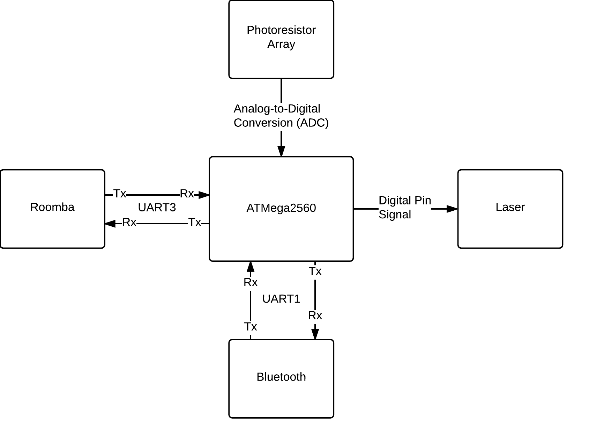
The remote station is connected to bluetooth, the laser, the photocell array, and the Roomba, which it is mounted on. The laser emits a bright beam when the pin is set high. The photocell is read to obtain a value and determine if it has been shot, and the connection to the Roomba allows the remote station to send the Roomba commands, and receive sensor data back. The block diagram below shows the architecture of the remote station. 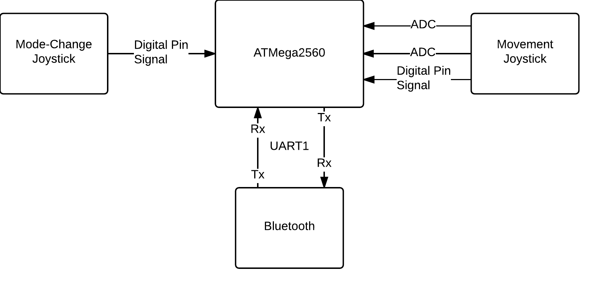
Phase 1: Manual Control
Phase 1 is heavily associated with behaviour based robotics. The sensors are used to directly control the actuators.
Laser FireThe Fire FSM takes data from a pushbutton and turns the laser on if the state of the pushbutton is down, or off if the state is up. The following shows the connection of sensors to actuators and the finite state machine (FSM).
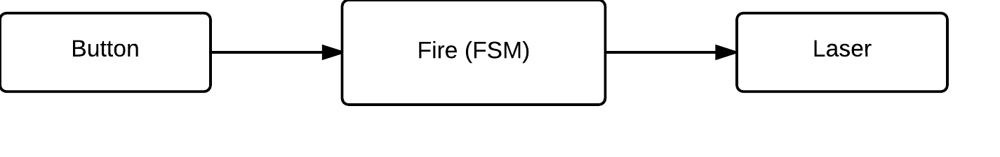 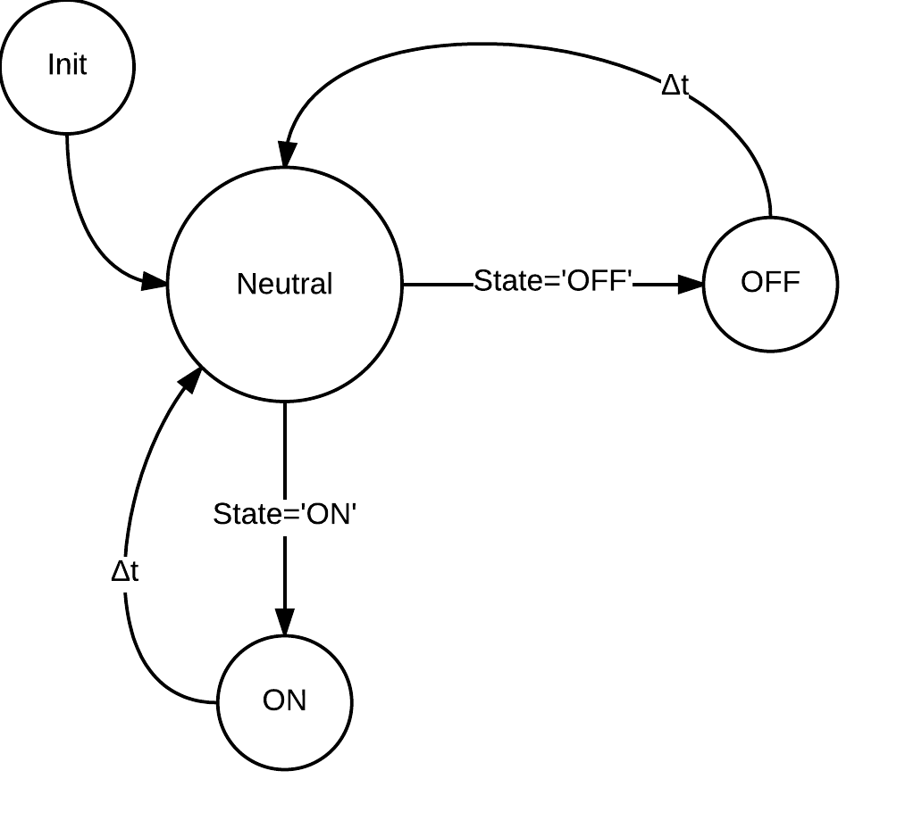 PhotocellThe photocell sensor array detects spikes in light to determine if it has been shot. Every 0.5 seconds it will update a threshold value. This threshold value is the amount of light coming from the room plus a small value. If this threshold is exceeded, then we can determine that the tank has been shot. Being shot puts the Roomba into a dead state where it can't move or shoot. This is illustrated in the diagrams below.
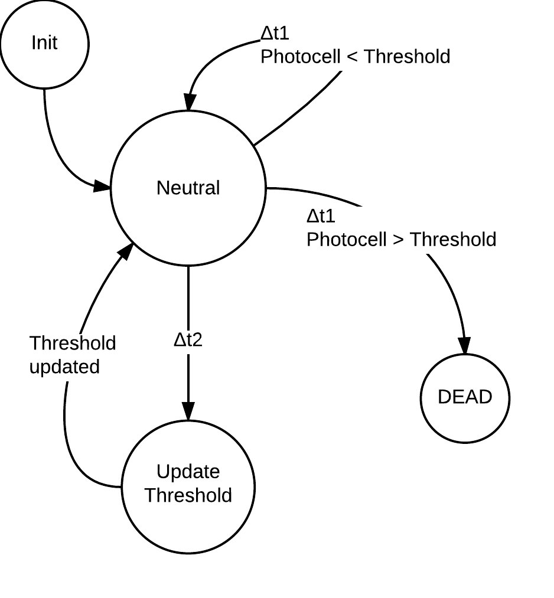 Movement
The joystick is used to control the Roomba. The position of the joystick is mapped to nine different states. These states are shown in the diagram below:
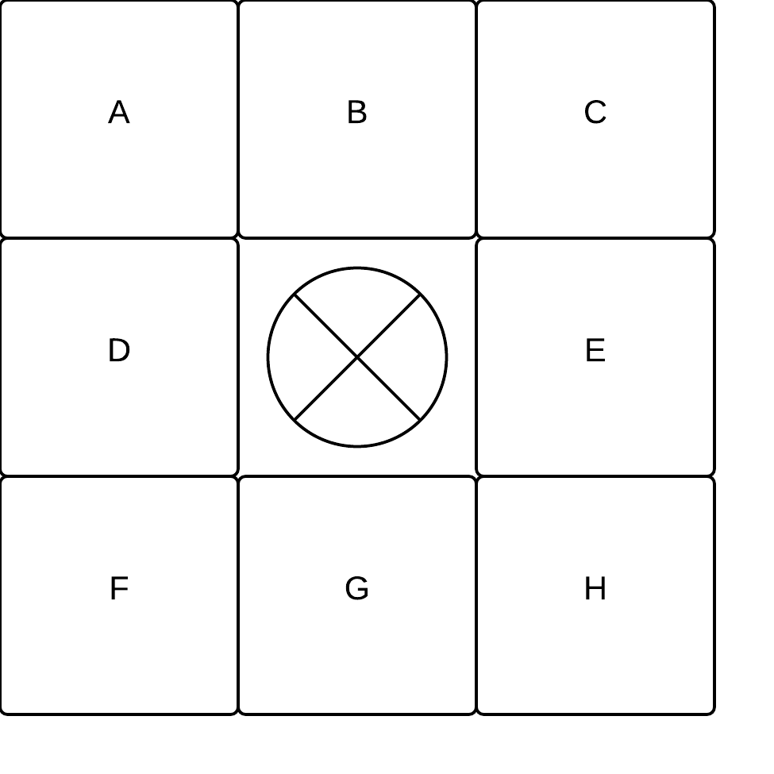
These letters then map to commands:
| A | Forward left |
| B | Forward |
| C | Forward right |
| D | Spin counterclockwise |
| E | Spin clockwise |
| F | Backwards left |
| G | Backwards |
| H | Backwards right |
| X | Stop |
The base station needs to communicate with the remote station, and the remote station needs to communicate with both the base station and the Roomba. This is done through UART communication over USB and bluetooth. All stations can send data and receive data. This is shown in the FSM below:
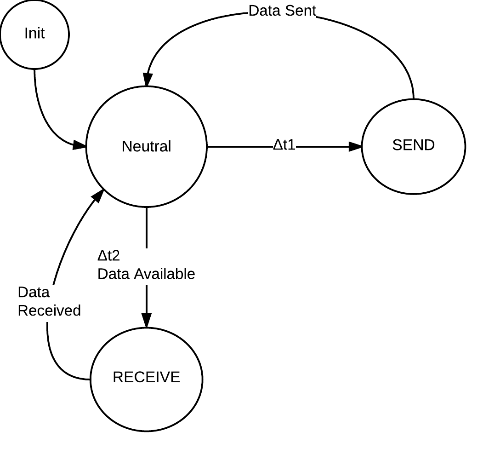Phase 2: Semi-Autonomous Control
Subsumption Architecture
Phase 2 uses the subsumption architecture. In this robotics architecture, sensors may cause the system to have different behaviour based on their state. This is accomplished by decomposing the overall behaviour into sub-behaviours. These sub-behaviours implement a degree of behavioral competence. The more important behaviours are then able to subsume less important behaviours. This can be seen from the high-level representation of our system's motor control logic:
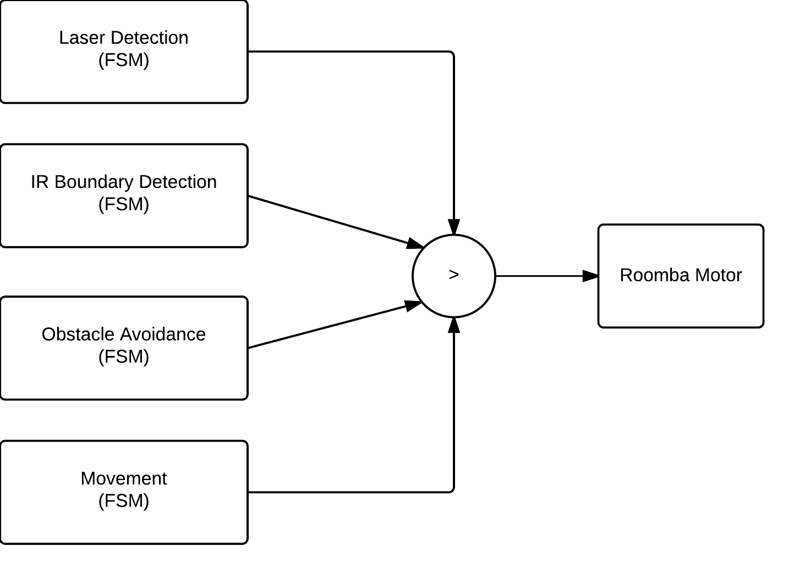
In the above representation, four separate FSM's govern the Roomba's motor behaviour. However, there is a subsumption hierarchy that determines which logic is actually in command. In our system, the order is:
Laser Detection > IR Boundary Detection > Obstacle Avoidance > Movement.
When the Roomba is in semi-autonomous mode, it will travel forward, and when it detects an obstacle or virtual IR wall, it will back up, turn counterclockwise and continue onward.
Updated MovementThe Movement FSM was updated to include a pushbutton input that toggles the state of AUTO between 1 and 0. In addition to the functionality from Phase 1, the system now only continues forward when AUTO is set to 1. The change can be seen in the following diagrams:
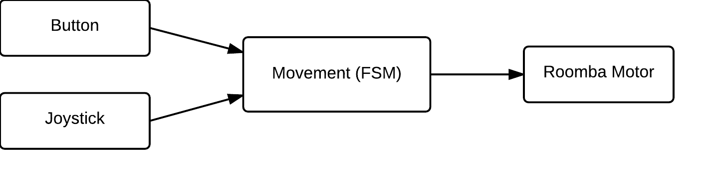 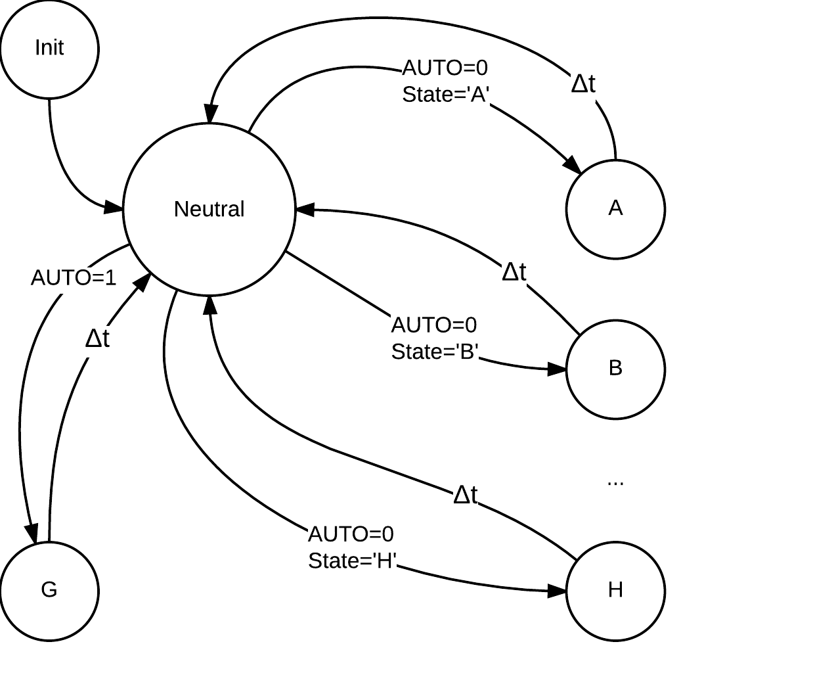 IR-Wall DetectionThe IR-Wall Detection FSM uses the Roomba sensor data and sends a movement command if an IR-Wall is detected. The command sent depends on the current movement state, and is the reverse of the current movement state. The mapping of current states to movement commands is shown in the table below:
| A | Backwards left |
| B | Backwards |
| C | Backwards right |
| D | Spin clockwise |
| E | Spin counterclockwise |
| F | Forward left |
| G | Forward |
| H | Forward right |
| X | Backwards |
The Obstacle Avoidance FSM takes Roomba sensor data and determines if an obstacle has been hit by the Roomba's front bumpers. If this is the case, the Roomba will drive backwards for 200ms. In addition, if the Roomba is currently in autonomous mode (ie: AUTO = 1), the Roomba will then briefly turn in place. This FSM is shown below:
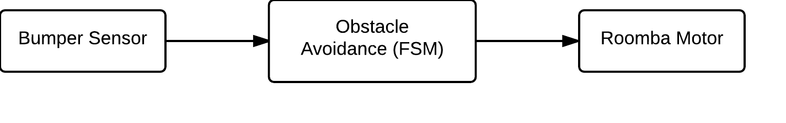 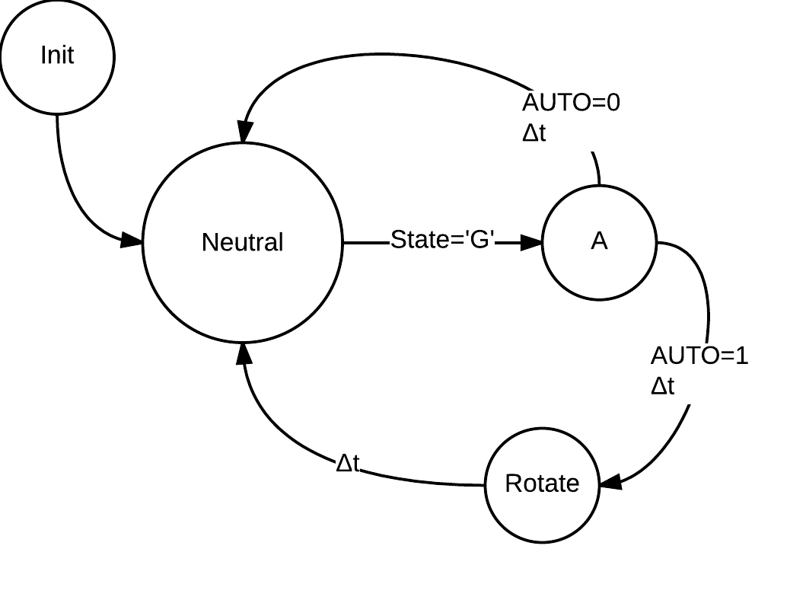Task Decomposition
The above functionality is broken down into tasks that will run on the RTOS. Each task has its own scheduling parameters (priority and frequency). A priority of 0 represents the highest, whereas a priority of 10 is the lowest.
Base Station Tasks
| Task | Description | Priority, Frequency |
| SwitchTask | Switches between autonomous and manual mode | 2, 20ms |
| LaserTask | Reads the pushbutton and sends the data to fire the laser | 2, 10ms |
| screenTask | Checks if any data is ready to be displayed on the LCD | 2, 15ms |
| bluetoothReceive | Receives incoming data from the remote station | 2, 15ms |
| RoombaTask | Reads x and y from joystick and maps it to Roomba states | 2, 20ms |
| Idle | Runs when no other task is available | 10, No other taks |
| Task | Description | Priority, Frequency |
| Bluetooth_Receive | Receives incoming data from the base station | 1, 5ms |
| Bluetooth_Send | Sends lightsensor data to the base station | 2, 10ms |
| Laser_Task | Turns the laser on or off depending on the pushbutton | 2, 10ms |
| LightSensor_Task | Reads the lightsensor value to determine if it has been shot | 2, 10ms |
| Roomba_Task | Determines the next move for the Roomba | 2, 20ms |
| Get_Sensor_Data | Requests bumper and virtual wall data from the Roomba | 2, 20ms |
| Idle | Runs when no other task is available | 10, 10, No other taks |
Implementation
RTOS
The RTOS from project 2 is running on both the base and remote station. The stations do not use all of the features of the RTOS, but they use task creation, sleep, termination, and mutex lock and unlock. Thus the code does have critical sections that are protected by mutexes, and tasks that are put to sleep and woken up.
UART
The UART library is used to transfer data across bluetooth, and to and from the Roomba. There are four commands for bluetooth and the Roomba and they are: UART_Init, Send_Byte, Receive_Byte, and Send_String. Bluetooth uses UART1 and the Roomba uses UART3. The first byte sent over bluetooth is always a flag indicating which actuator the data is meant for, then the remaining data is sent. The Roomba functions similarly with the first byte usually being a special opcode define in the OI.
UART_InitUART_Init sets the baud rate to 19.2k, enables the receiver and transmitter, specifies that 8 bit data will be transferred, and disables double speed.
Send_ByteSend_Byte takes in 8 bits of data, waits for an empty transmit buffer, then puts the data into the buffer.
Receive_ByteReceive_Byte waits for data to be received, then returns the byte.
Send_StringSend_String takes a character array and sends one character at a time until the entire array has been sent.
Roomba
The Roomba library is used to initialize the Roomba, drive the Roomba, Query the sensors, and load a song.
Roomba_InitRoomba_Init wakes the Roomba from sleep, Starts the open interface (OI), waits 2 seconds, then pulses the DD pin three times to set the baud rate to 19.2k. Then the Roomba is put into safe mode and a song 0 is initialized.
Roomba_DriveRoomba_Drive takes in a 16 bit velocity and a 16 bit radius, and sends them to the Roomba for execution.
Roomba_PlayRoomba_Play takes a song number and plays the song.
Roomba_SensorsRoomba_Sensors takes a packet_id and returns the data from the specified sensor.
Roomba_QueryListRoomba_QueryList takes two parameters and requests two sensor data packets back. The data arrives in the same order it was sent.
Roomba_SongRoomba_Song loads a song onto the Roomba by sending the song number, 6 notes, and the duration each note should be played in 1/64ths of a second.
Queues
The queue data structure is used to hold data that comes in over bluetooth. The bluetooth receive functions put the data for each actuator into the right queue. There is an lsQueue (light sensor queue) on the base station, and a laserQueue and roombaQueue on the remote station. The independent functions can then check these queues to see if new data has become available. The queues are circular and keep track of a front and rear pointer. They are all a fixed size of 10, which with a circular queue gives 9 spaces. The functions available are buffer_isEmpty, buffer_isFull, buffer_enqueue, and buffer_dequeue. Because of the rear and front pointers, enqueue and dequeue are both O(1) operations.
Base Station
The base station is implemented using five tasks and an idle task. These tasks are LaserTask, RoombaTask, bluetoothReceive, screenTask, and SwitchTask. The a_main task that is created by the RTOS creates these tasks, initializes the bluetooth_mutex, adc_mutex, ls_mutex, initializes A to D conversion, initializes bluetooth, and then terminates itself.
MutexesThe adc_mutex is locked when an A to D conversion begins, and is unlocked when it finishes. This prevents any conversions from being interrupted and cancelled.The bluetooth_mutex is locked when data needs to be sent, and then unlocked when the data has sent. This is to prevent a task that is sending data from being interrupted part way through and having another task start sending data. The ls_mutex is locked anytime the lsQueue (light sensor queue) is accessed.
LaserTaskThe LaserTask reads the digital pin from the pushbutton on the joystick and if the state has changed, sends the new state to the remote station so that it can update the laser. LaserTask then goes to sleep for 10 ticks (100ms) and therefore has a frequency of 10Hz.
RoombaTaskRoombaTask locks the adc mutex, then does two A to D conversions to get the x and y values from the joystick and unlocks the mutex. It then maps these values to the characters A, B, C, ... , H, X shown above in the design section. The correct state is then sent to the remote station and this task will sleep for 20 ticks (200ms).
bluetoothReceiveIf there is data available to receive, then this task reads the data and checks to see if the first byte is the light sensor flag indicating light sensor data is incoming. If it is, two more bytes are read and put together into a 16 bit integer. The ls_mutex is locked and this integer is enqueued into the light sensor queue, then the ls_mutex is unlocked. This task then sleeps for 15 ticks (150ms).
screenTaskscreenTask locks the ls_mutex and dequeues an element from the buffer if one is available. This is all this task does for now, eventually it would display on an LCD screen on the base station. The ls_mutex is then unlocked. screenTask then sleeps for 15 ticks (150ms).
SwitchTaskSwitchTask reads the digital pin the other joystick pushbutton is connected to. If the button has been pushed, it sends a byte to the remote station that indicates it needs to change states. The two possible states are autonomous or manual. This task then sleeps for 20 ticks (200ms).
Remote Station
The remote station is implemented using 6 tasks and an idle task.
Testing
Testing was conducted to evaluate whether the applications behaviour matched the expected criteria. Testing was split into four distinct categories. These categories are manuel control and laser, IR boundary and obstacle avoidance, semi-autonomous, and light detection.
Manual Control and Firing
| Objective: | To test that the joystick movements are correctly mapped, sent over bluetooth, and translated into Roomba drive commands to control the Roomba. |
| Description: | Moving the joystick up and down makes the Roomba go straight forward and straight backwards. Moving the joystick left causes the Roomba to spin counterclockwise, moving right causes the Roomba to spin clockwise. Moving the joystick to the top left corner causes the Roomba to travel forwards and counterclockwise, the top right corner causes it to travel forwards and clockwise, the bottom left causes it to travel backwards and clockwise, and the bottom right to travel backwards and counterclockwise. |
| Results: | As shown in the video below, the Roomba responds quickly and effectively to the expected behaviour |
IR Boundary and Obstacle Avoidance in Manual Mode
| Objective: | This test has two purposes. The first is to make sure the Roomba does not cross any virtual walls by backing up when the wall is detected. The second is to back up when the Roomba runs into an obstacle with the bumper. |
| Description: | When the Roomba runs into an obstacle with the bumper, it will travel straight backwards to back away from the object so that the user can then attempt to avoid the obstacle. The same occurs for the virtual wall. |
| Results: | As shown in the video below, the Roomba backs away when the bumper is hit, or the virtual wall is detected. |
Semi-Autonomous Control
| Objective: | This test has four purposes. The first is to make that the Roomba can switch from manual to semi-autonomous mode and vice versa. The second is to verify that while in semi-autonomous mode, the Roomba travels forward. The third tests that if a virtual wall is detected, the Roomba will backup, turn counterclockwise, and then continue forward. The fourth shows that when an obstacle is hit the roomba backs up, turns counterclockwise, and continues as well. |
| Description: | The video starts by switching from manual mode to semi-autonomous mode. Then the Roomba travels into the virtual wall and turns counterclockwise. Once the Roomba hits the real wall, it also turns clockwise. The video ends by using the button to switch back to manual mode. The virtual wall emitter is enclosed by two red cups in order to emit a more focused beam. |
| Results: | As shown in the video below, the Roomba successfully switches modes, avoids the virtual wall, and bounces off the real wall, and successfully returns to manual mode. |
Light Detection
| Objective: | To test that the light sensor successfully detects a laser and registers it as a hit. |
| Description: | When a laser is shined on the light sensor, the Roomba (the one on the left) will play a sound to indicate that it was hit, turn off its laser, stop moving, and be in a dead state. |
| Results: | As shown in the video below, the Roomba successfully stops moving, has its laser off, and can no longer be controlled until it is reset. |
Discussion
Discuss...
Conclusion
A semi-autonomous laser tank was created using the sensors and actuators from project 1, the RTOS from project 2, the ATMega 2560 microcontroller, and the iRobot Roomba Create 2. The tank's movement can be operated manually or autonomously, while the laser is always controlled by the pushbutton on the joystick. The light sensor detects the light of the room using averaging and detects bursts in the light to determine whether it has been hit. This concludes our making of a Roomba laser tank.
Demos
Phase 1 Demo
This demo shows the Roomba being manually controller by the joystick and moving around.
Phase 2 Demo
This demo shows the Roomba operating in semi-autonomous mode. When it runs into an obstacle, it goes straight backwards, turns counterclockwise, and then continues forward again.
References
Appendix
Base Station Wiring Diagram
One of the joysticks only has the digital pushbutton pin connected.
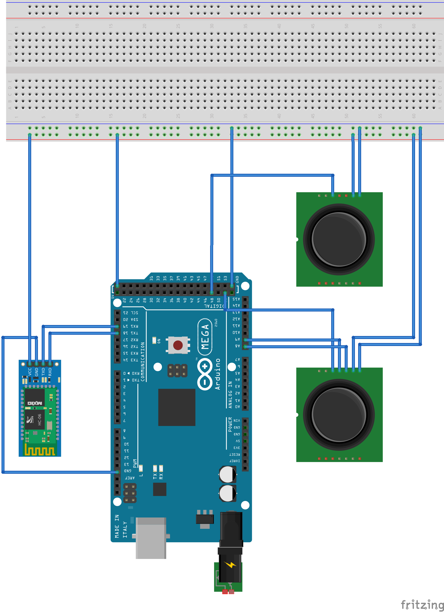
Base Station Wiring Diagram
The four wires left unplugged are for attaching to the Roomba.
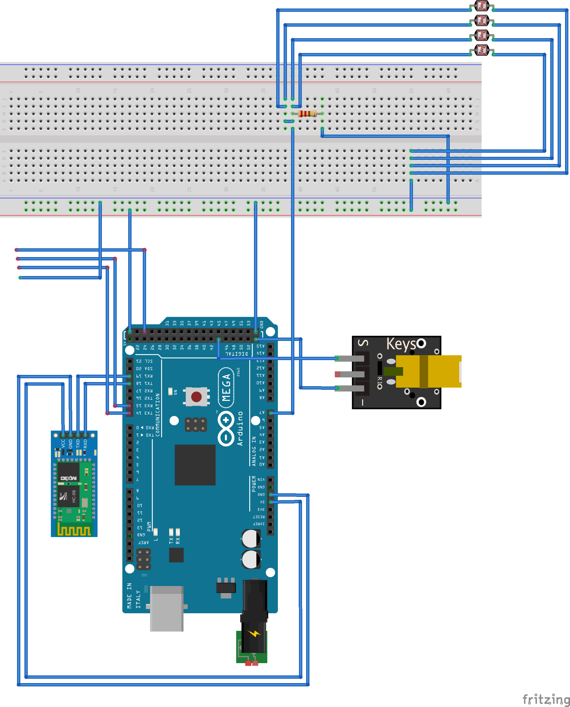
Code
The code API as generated by Doxygen is available here.
You can download the project 3 source code here.